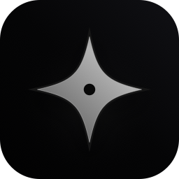
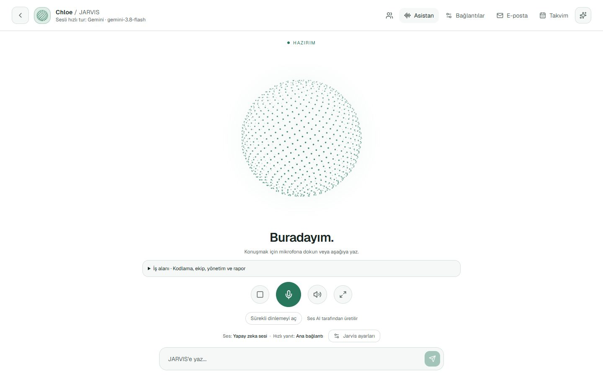
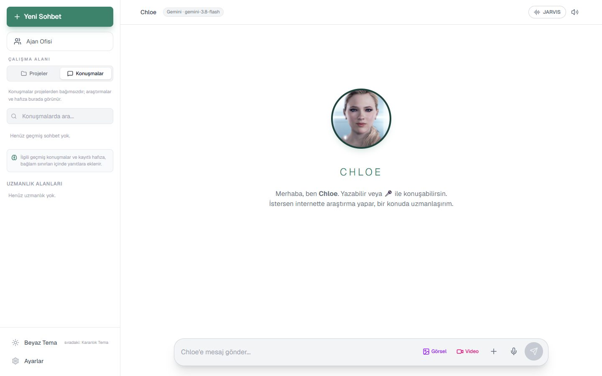
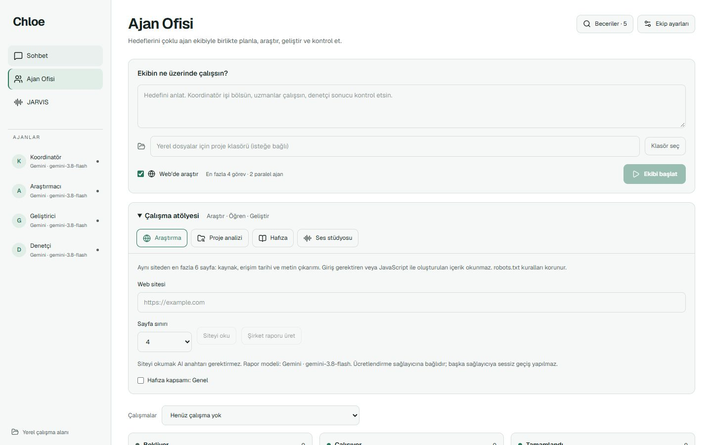

JARVIS sesli asistan
Mikrofona dokun ve konuş. Yanıtlar cümle cümle seslendirilir; Gemini doğal sesi akış hâlinde çalınır. Sessizlik eşiği, otomatik gönderim ve ayrı ses bağlantısı ayarlanabilir.

Chloe Assistantby Berkay AtağSürüm 0.2.8 · Windows & macOS
Chloe; sesli JARVIS asistanını, birlikte çalışan bir ajan ekibini ve yerel kod çalışma alanını tek uygulamada toplar. Seçtiğin model sağlayıcısıyla çalışır, anahtarlarını şifreli kasada tutar ve dosya değişikliği ya da komut çalıştırma için her zaman onayını bekler.

Ne yapar?
Günlük sohbetten çok adımlı kodlama işlerine kadar her şey aynı yerde. Her ekran, yanıtı hangi bağlantının ve modelin ürettiğini açıkça gösterir; sağlayıcı sessizce değiştirilmez.
Mikrofona dokun ve konuş. Yanıtlar cümle cümle seslendirilir; Gemini doğal sesi akış hâlinde çalınır. Sessizlik eşiği, otomatik gönderim ve ayrı ses bağlantısı ayarlanabilir.
Koordinatör, Araştırmacı, Geliştirici ve Denetçi bir hedef üzerinde birlikte çalışır. Değişiklikler önce denetlenir; reddedilen iş otomatik onaya çevrilmez.
Proje klasörünü aç, dosyaları gez ve düzenle, modelden değişiklik önerisi al. Test, lint ve derleme komutları süre ve çıktı sınırlarıyla çalışır.
Web sitesi araştırması, yerel proje analizi, kalıcı hafıza bankası ve ses stüdyosu. Kaynaklar ve erişim tarihleri raporda kalır.
Gemini, OpenAI, Anthropic, Ollama, FreeLLMAPI ve OpenAI uyumlu özel uç noktalar. Sohbet, hızlı sesli tur ve ses sentezi için ayrı bağlantılar seçilebilir.
Google ve Microsoft hesaplarını OAuth ile bağla; gelen kutusu ve takvim özetlenir. E-posta gönderimi yalnızca açık onayınla yapılır.
Ekranlar
Uygulama beyaz, karanlık ve siyah temalarla gelir. Bu sayfadaki görüntüler sağ üstteki tema düğmesine göre değişir.


Kurulum
Chloe bilgisayarında 127.0.0.1:3004 adresinde çalışan yerel bir sunucu ve onun penceresinden oluşur. İlk açılışta Ayarlar'dan bir model bağlantısı ekle.
xcode-select --install)./Applications/Chloe.app olarak kurulur.git clone https://github.com/BerkayAtag/Chloe-Assistant.gitnpm ci, ardından npm run devBuild-Windows-Setup.cmd (Inno Setup 6 gerekir).Gizlilik & güvenlik
Mesajların ve seçtiğin dosya bağlamı yalnızca yapılandırdığın model sağlayıcısına gider. Aşağıdaki sınırlar da bilinçli olarak açıkça yazılmıştır.
API anahtarları diskte AES-256-GCM ile saklanır, bozulmaya karşı yedeklenir ve hiçbir pakete dahil edilmez.
Sunucu yalnız 127.0.0.1 dinler; Origin ve Fetch Metadata kontrolleri başka sitelerin isteklerini reddeder. Bu bir kimlik doğrulama değildir; sunucuyu internete açma.
Tarayıcı ve araştırma araçları yerel ağ, loopback ve bulut meta veri adreslerine erişemez.
Dosya değişikliği, proje komutu ve e-posta gönderimi senin onayın olmadan çalışmaz. Onaylanan komutlar hesabının yetkileriyle çalışır; bir işletim sistemi korumalı alanı değildir.
Bilgisayar yönetimi komutları ve macOS sistem sesleri yalnız macOS uygulamasında bulunur. Windows'ta konuşma tanıma ve seslendirme Edge'in yerleşik hizmetlerini veya seçtiğin ses API'sini kullanır.
Canlı model yanıtları deterministik değildir ve sağlayıcı kotası ya da gecikmesi Chloe'nin denetiminde değildir. Sıfır hata veya sıfır güvenlik açığı garantisi verilmez.